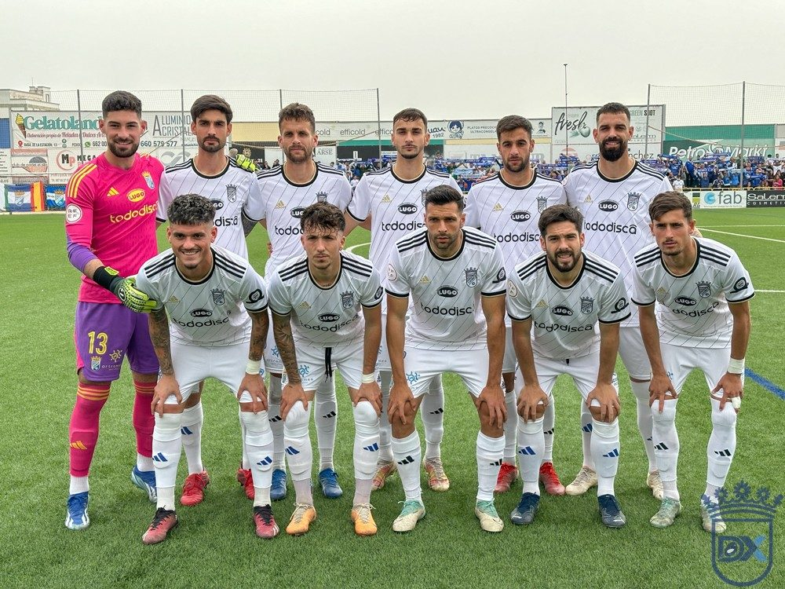

Del Río y Santos, dos protagonistas del ascenso del Xerez, se medirán a su exequipo con el Atlético Central

Foto: Diario XerecistaAmbos formaron parte de la plantilla que subió al Xerez CD a Segunda RFEF y el domingo estarán en el otro lado, en el Ciudad de Alcalá.
El partido del próximo domingo entre el Atlético Central y el Xerez CD, a las 12:00 en Alcalá de Guadaíra, tendrá un componente especial. En las filas del conjunto sevillano militan Del Río y Santos, dos jugadores que participaron en el ascenso del Xerez a Segunda RFEF.
Ahora se reencontrarán con el que fue su equipo en la jornada 12 del Grupo IV. El Xerez llega quinto, con 18 puntos y cuatro victorias seguidas. El Atlético Central es undécimo, con 15 puntos.
🇬🇧 Read in English ← Volver a la portada